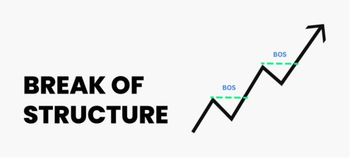
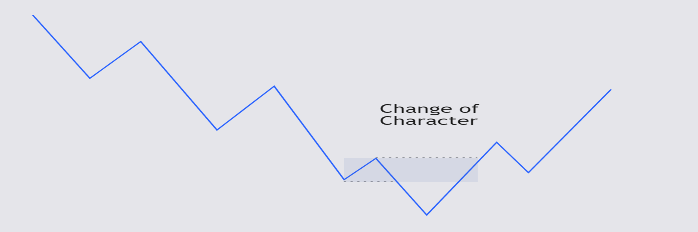
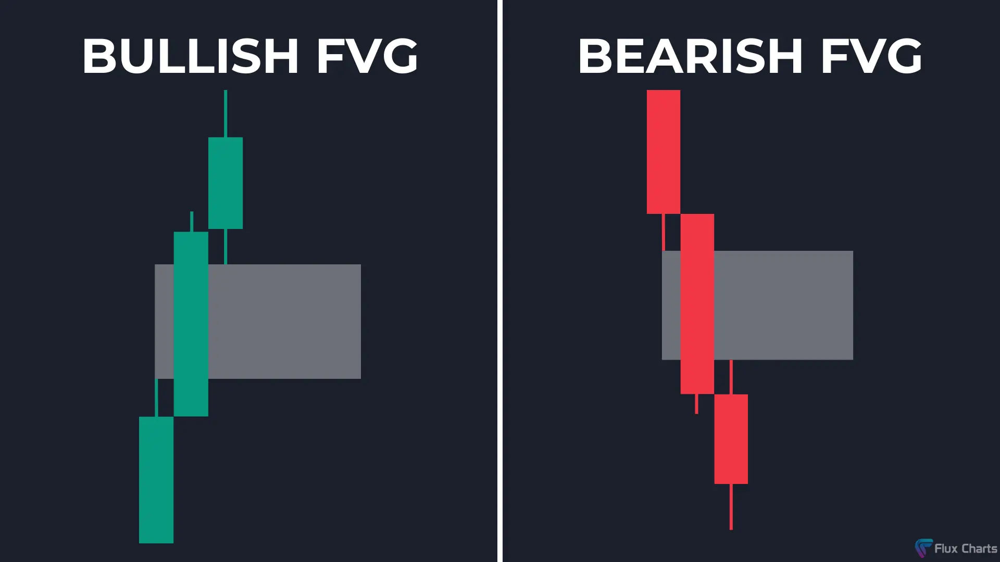

See the Market Through the Eyes of the Pros,Master the Smart Money Concept !!
Apa Itu Smart Money Concept ?
Smart Money Concept merupakan suatu metode trading yang mengemukakan tentang suatu pendekatan
yang digunakan oleh para investor besar, bank sentral, hedge fund, dan para market maker ketika
mereka melakukan trading di market. Smart Money Concept (SMC) digunakan sebagai metode perlawanan
terhadap metode trading yang telah umum diguankan secara umum. SMC berkembang sangat cepat
di berbagai forum trading, hal ini membuat banyak sekali trader yang menjelaskan SMC mereka dengan
versi yang berbeda, namun pada akhirnya tetap 1 basic ilmu yang sama.
Banyak pihak yang mengungkapkan bahwa smart money concept diciptakan oleh Michael J. Huddleston
dari kelompok traders yang dikenal luas sebagai "The Inner Circle Trader" atau khalayak umum lebih
mengenalnya sebagai ICT. SMC sebagai metode yang baru terus berkembang dan pembaruan karena sifat market
yang dinamis. Pada Metode ini kita akan fokus untuk mempelajari : Market Structure, Liquidity,
Fair Value Gap, Dan Order Block. Jadi mari kosongkan gelas dan mengisi kembali dengan ilmu yang baru!!
keterangan Market Structure merupakan keadaan dalam market yang menggambarkan potensi arah pergerakan harga
dimasa yang akan datang. terdapat 3 jenis trend dalam market structure yaitu bullish trend / UpTrend, Bearish Trend / DownTrend,
, Sideways / Konsolidasi. Uptrend merupakan kondisi dimana price action atau pergerakan harga itu mengalami kenaikan
sehingga tercipta suatu kondisi dimana market menciptakan Higher High ( HH ) dan Lower High ( LH ), Sedangkan pada
DownTrend market mengalami penurunan harga sehingga membantuk Higher Low ( HL ) dan Lower Low ( LL ). Nah pada Konsolidasi
market akan berada pada 1 titik support & resistance atau supply & demmand tertentu.
Break Of Stucture

Break Of Stucture ( BOS ) adalah kondisi dimana price action menembus higher high / lower low sebelumnya, sehingga
membentuk sebuah HH / LL yang baru, kondisi tersebut bisa dilihat seperti pada gambar.
Change Of Character

Change Of Character atau CHoCH adalah kondisi dimana price action itu mengalami pembalikan harga, atau karakter
bisa dari up ke down atau sebaliknya. hal tersebut ditandai dengan kondisi price action yang menembus stucture sebelumnya
namun dalam kondisi berbalik arah, berbeda dengan BOS yang melanjutkan trend, CHoCH itu berbalik trend
Liquidity
Dalam konsep "Smart Money", Liquidity sendiri mengacu kepada suatu momentum dimana price action akan menyasar area
stop loss para trader ritel, Sesaat setelah hal tersebut terjadi, harga akan langsung melambung tinggu atau turun sesuai
analisa para trader ritel. Ada 2 Liquidity dasar yang wajib dipahami yaitu Sell Side Liquidity dan Buy Side Liquidity.
Sell Side Liquidity
Sell side liquidity adalah area di mana banyak order sell terkonsentrasi,yang dimanfaatkan Smart Money
untuk membeli aset dalam jumlah besar atau memicu stop-loss para trader dengan posisi short
Buy Side Liquidity
Buy side liquidity adalah area di mana banyak order beli terkonsentrasi, dimanfaatkan Smart Money
untuk menjual aset dalam jumlah besar atau memicu stop-loss trader dengan posisi buy long

Fair Value Gap
Fair Value Gap atau disingkat "FVG" adalah kondisi dimana terjadi sebuah imbalance atau ketidakseimbangan momentum antara
buyer & seller sehingga menciptakan kondisi selisih atau gap pada 3 candlestick. Pada Smart Money Concept Area FVG akan sekali
lagi dikunjungi dan sebagai trader kita memiliki peluang untuk melakukan order di area tersebut. cara menarik area FVG dengan
cara menandai bagian wick candlestick 1 dan candlestick 3 sehingga candlestick2 menjadi area fvg itu sendiri.
Bullish Fair Value Gap
Bullish FVG adalah kondisi dimana terjadinya imbalance yang dimenangkan oleh para buyer, hal ini ditandai dengan adanya
impulsif price bullish. yang nantinya harga kan mengisi gelas kosong tersebut dan kembali naik keatas.
Bearish Fair Value Gap
Sebaliknya Bearish FVG merupakan kondisi dimana seller yang memenangkan sehingga terjadi impulsif price bearish yang menyisakan
area kosong yang nantinya harga akan naik ke area fvg nya baru kemudian turun lagi.
Order Block
Order block tau OB merupakan area dimana terdapat konsentrasi order ( baik penjualan maupun pembelian ) yang sangat tinggi
yang mengakibatkan terjadinya pergerakan harga yang signifikan. area ini bisa di indentifikasi dengan 1 candle sebelum
terjadi impulsif price atau kenaikan atau penurunan harga yang pesat. Order Block dibagi menjadi 2 yaitu bullish OB dan
Bearish OB. Konsep Bearsih OB dan Bullish OB ini hampir sama seperti Bullish dan Bearish FVG. Sebagai TIPS OB yang kuat
adalah OB yang ada FVG nya.